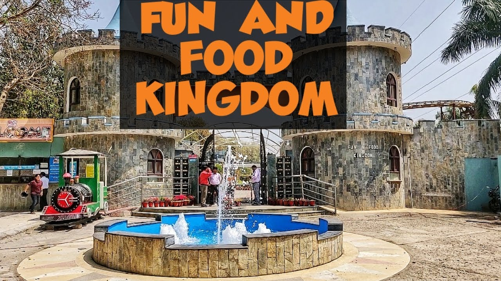

<html>
    <head>
        <title>about fun and food</title>
        <style>
            #para
            {
                text-align: center;
                color:red;
                font-size: 20px;
                font-variant: small-caps;
                background-color:green;
            }
            .HEAD
            {
        
                text-align:center ;
                color:red;
                font: size 100px;;
                font-style: oblique;
            }
        </style>
    </head>
</html>
<body>
    <p class="para">Fun 'N' Food Kingdom 
<h1><b>About fun and food kingdom</b></h1>
        Fun 'N' Food Kingdom, the first Amusement and Water Park in Dehradun is the destination to have "fun for the whole day". A complete amusement and water park with 14 high-tech rides, Picnic Area, Boat Club, Water Slides, Wave Pool, Rain Dance, Kids Pool water activities, studded with lush green lawns, fountains and beautiful layout with ultra modern equipments for giving additional educational and scientific knowledge to the childrens.
        
        We offer various recreational and entertainment facility to the public. 
        
         
        
        </p>
        <p id="head"><center><h1>Ticket Type</h1></center>
            ( w.e.f.: 06/06/2022 )
           <b>
            Working Days
            (Monday to Saturday)	Holiday
            (Sunday and Holidays)
            Adult Regular
             (Above 10 Years)
            Rs. 750 Amusement & Water Park
            Rs. 800 Amusement & Water Park
            Kids
             (3-10 Years)
            Rs. 650 Amusement & Water Park
            Rs. 700 Amusement & Water Park
            Senior Citizen
             (Above 60 Years, on submission of age proof)
            Rs. 500 Amusement & Water Park
            Rs. 500 Amusement & Water Park
            Stag
            Rs. 500  Amusement Park only
            Rs. 500  Amusement Park only
            Defence
            Rs. 600 Amusement & Water Park
            Rs. 650 Amusement & Water Park
            </b>
            </p>
            <p><center><h1>PARKS TIMINGS</h1> PARK TIMINGS</center>
              <b>  Days	Amusement Park	Water Park
                Monday to Saturday	10:00 am - 6:00 pm	12:00 pm - 5:00 pm
                Sunday and Holidays	10:00 am - 7:00 pm	11:00 am - 6:00 pm</b></p>
                <p><center><h1><b>Success and expansions</b></h1></center>
                    Commencement of Fun 'N' Food Kingdom

                    In Dec 2003,the long-awaited day came and the gates of Fun 'N' Food Kingdom promised were opened. Fun 'N' Food Kingdom promised "fun for whole day" to the people of Dehradun and the tourists who visited the area. Tourists from nearby Mussorie were targeted as a potential market, since the cite was a typical destination of people of surrounding towns during long week-ends. Nearby was also a few hundred boarding school, and parents visited their children often looked for locations to offer a break to the youth's hectic study sessions. what better break could these parents offer than a visit to Fun 'N' Food Kingdom ?
                    
                    </p>
                    <p>
                       <h1><b> Best Time To Visit Fun 'n' Food Kingdom Dehradun</b></h1>
                        The best time to visit the Fun 'N' Food Kingdom is the summer season, i.e., the months between March to June. The temperature of Dehradun city is moderate in these months so that the tourists can enjoy their trip at its best level.</p>
<p><center><h1> How to reach Fun 'n' Food Kingdom DehradunT</h1></center>
    The Fun 'N' Food Kingdom is located near the main city of Dehradun, and hence it is well connected to all the major states and cities of the country via different transportation modes.
    
   <b> By Flight:</b> The nearest airport to the Fun 'N' Food Kingdom is the Jolly Grant Airport, which is around 37 kilometres from the park. Once you reach the airport, you can easily book a cab from top car rental companies in Dehradun to the park.
    
   <b> By Train:</b> The nearest railway station to the Fun 'N' Food amusement and water park is the Dehradun Railway Station, which is just 10.1 kilometres away from the park. You can easily reach the park by booking a taxi or local bus.
    
   <b> By Bus:</b> One can easily find a direct bus to Dehradun main city from some major cities like Delhi. After reaching the main city centre, you can easily reach the park in 20-25 minutes by booking a cab.
    
    </p>
    <p></p>
                    </body>
                    </html>